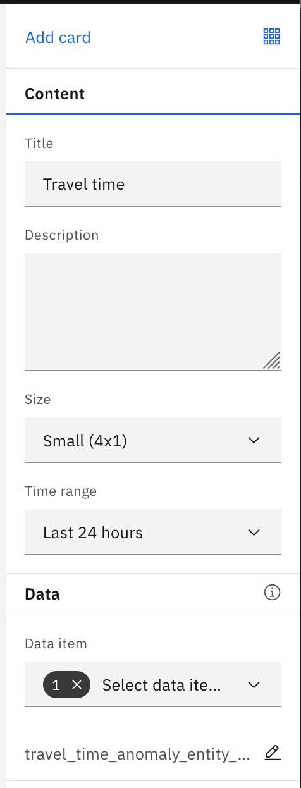
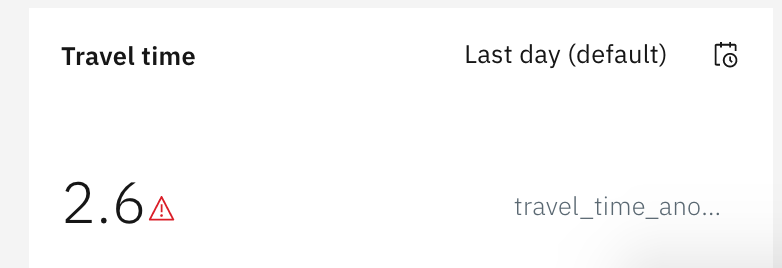
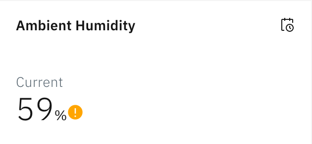
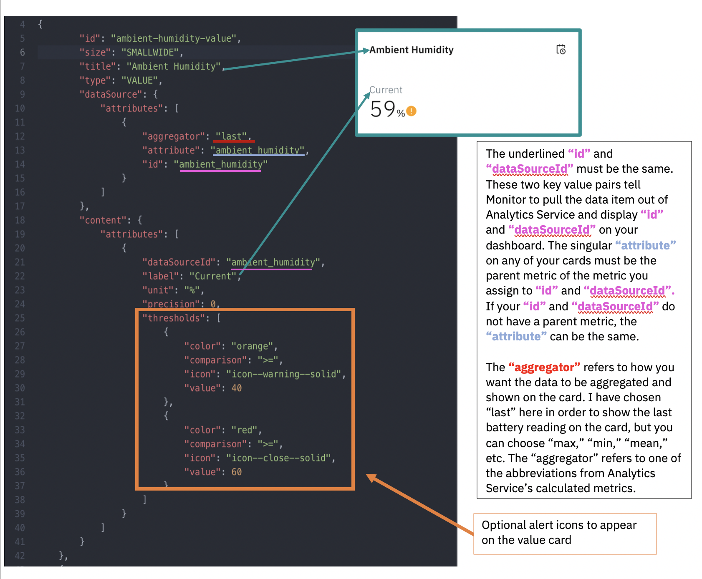

Create Value Card
A great way to augment your Maximo Asset Monitor dashboards is with value cards. This type of card allows you to display a metric or multiple metrics on a card and is a good way to show the status of an asset. You are also able to set alert thresholds to have different icons appear on the card to indicate a positive or negative status.
Create Value Card using UI widget
- Click on the
gear iconand choose Manage instance dashboard - Choose
Value/KPI - Title: Travel time
- Time range:
Last 24 hours - Data item: travel_time_anomaly_entity_73000
- Click on the
pencil icon - Click on
add Threshold - Type
2in the>value box - Save
- Add card
- Save and close
 
Create Value Card using JSON
Export Dashboard JSON
- Open up the landing page for your entity type and select the dashboard you will be uploading your image card to.
- Click on the gear in the top right of your chosen dashboard.

- Click
Edit Dashboard.
- Click
Exportand save your JSON into a folder that you can keep handy. Make sure to save the file with the file extension.json. Open the file in a text editor of your choice. Here are some good open source options: Atom, Brackets, and Sublime.
Add Value Card JSON
 In this Exercise, you will learn to make a more simple value card in order to best learn the theory behind the JSON mapping. You will make a value card that will look like the value card shown on the dashboard below.
In this Exercise, you will learn to make a more simple value card in order to best learn the theory behind the JSON mapping. You will make a value card that will look like the value card shown on the dashboard below.

- Please copy and paste the JSON code block below into the top of your
cardsarray.
{
"id": "ambient-humidity-value",
"size": "SMALLWIDE",
"title": "Ambient Humidity",
"type": "VALUE",
"dataSource": {
"attributes": [
{
"aggregator": "last",
"attribute": "ambient_humidity",
"id": "ambient_humidity"
}
]
},
"content": {
"attributes": [
{
"dataSourceId": "ambient_humidity",
"label": "Current",
"unit": "%",
"precision": 0,
"thresholds": [
{
"color": "orange",
"comparison": ">=",
"icon": "icon--warning--solid",
"value": 40
},
{
"color": "red",
"comparison": ">=",
"icon": "icon--close--solid",
"value": 60
}
]
}
]
}
},
- The information below gives you the tools you need to map the data items in your Entity Type to the card you will display with your JSON code.  Some other important notes about the JSON:
- The
idat the very top needs to be a unique name for this card. Use dashes instead of spaces. - The
sizeis self explanatory. This size isSMALLWIDE - The
typeis the type of card such asVALUE,TIMESERIES, orIMAGE. unitis the unit of measurement belonging to your data item.-
precisionrefers to the number of decimal points to be seen. -
Once you feel that you have correctly mapped the data items from your entity type into the above JSON format, save your file with your finished value card. Be sure to employ version control and save your file with a new name every time you make serious changes in case you make an error. You want to make sure you always have a working file.
Import Dashboard JSON
-
- Open up the landing page for your entity type and select the dashboard you will be uploading your image card to.
- Click on the gear in the top right of your chosen dashboard.
- Click
Edit Dashboard.
- Click
Importand select the file that you have just been working on. If you are successful, a small grey square will appear among your line graphs to drag and drop until you are satisfied with the layout. If you are unsuccessful, you will receive an error. The error message will notify you of something to change. Another option is to use a JSON parser on the internet that will notify you if your JSON has discrepancies. If at first you do not succeed, try, try again!